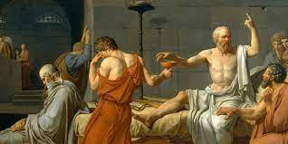

É... Quem eu sou mesmo?
Bom, eu sou um garoto normal, com uma vida normal, pensamentos normais, e problemas normais
Ok admito, um garoto de 16 anos interessado em programação não é tão "normal" hoje em dia, mas algum diferencial eu teria que ter né?
Falando assim eu até pareço que sou aqueles nerdzinhos que sempre ficam de canto e que ninguém se importa muito. Em partes eu sou, mas... também não sou, sei lá, não consigo me definir com um esteriótipo assim, não consigo me resumir a meras palavras (e nem estou sendo vaidoso, apenas acho que a complexidade humana não deveria nunca se resumir a... meras palavras)
Me identifico muito com aquela música do Raul Seixas onde ele diz "Se hoje eu sou estrela amanhã já se apagou, se hoje eu te odeio amanhã lhe tenho amor. Lhe tenho amor, lhe tenho horror, lhe faço amor, eu sou um ator"

Sinceramente, nem quero me rotular assim, coisas como dizer quem eu sou, são coisas quase impossíveis para mim, não sei quem sou, eu nem quero saber. A ideia de eu ser algo ou alguém apenas me prende nessa ideia, a agir de uma mesma forma, seguir um mesmo padrão, pois tudo que estaria fora desse padrão seria "errado" por "não ser eu". Abandonar essa ideia faz com que eu consiga agir de maneira mais... livre, não me prendo a padrões, me "prendo" naquilo que quero, preciso e posso fazer
Mas, pelo menos, eu posso dizer das coisas que gosto. Acho que já é um começo
Filosofia, Sócrates e Nietzsche
Filosofia vem do grego Filos e Sophia, que significam, respectivamente, Amor e Conhecimento. Filosofia é, literalmente, o amor pelo conhecimento, é pensar por prazer
No começo, odiava Filosofia, parecia desculpa de esquerdista para se parecer intelectual. Mas depois, ao "estudar" mais a fundo, percebi que não se tratava sobre Esquerda e Direita, e nem sequer era algo (compltamente) ligado a política, e sim relacionado a si mesmo, ao mundo e ao pensamento, aos valores, a moral, e a ética. A Filosofia tem como principal característica estudar questões gerais sobre:
- Existência
- Conhecimento
- Valores
- Razão
- Mente
- Linguagem
A filosofia tenta entender essas questões humanas através do pensamento e do questionamento
Só sei que nada sei
Essa é uma das frases filosoficas mais conhecidas, dita pelo grande filosofo Sócrates a mais de 2400 anos atrás
"Como se tornar sábio e ser verdadeiramente inteligênte?". A frase de Sócrates, por mais que seja curta e pequena, responde complexamente essa dúvida
"Só sei que nada sei" parece irônico para responder a pergunta de como ser inteligênte, mas vai muito além disso
A afirmação "Só sei que nada sei" não se refere a uma burrice cujo você não sabe de nada. A ideaia da frase se reflete dizendo que tudo o que ele sabe, é que ele não sabe de nada, ou seja, tudo o que ele sabe, é que ele pode saber mais, afinal, ele não sabe de tudo. Quando você se coloca na posição humilde de não ser um gênio e que pode aprender mais, você fica propenso a ir atrás de aprender mais
Dizer que a única coisa que você sabe é que, tudo o que você sabe, não é o bastante para te tornar melhor do que os outros. Você se coloca na posição de eterno aprendiz, sempre aprendendo mais e mais, se tornando mais e mais inteligênte
Nao se odeia quando pouco se preza, odeia-se só o que está a nossa altura ou é superior a nós
A Nietzsche, minha relação com essa cara é de amor e ódio. Por mais que ele seja inegavelmente um gênio, isso não muda o fato de ele já ter dito coisas idiotas (o que nos leva ao Só Sei Que Nada Sei, mesmo Nietzsche sendo um gênio, ainda precisava aprender mais)
A sua frase de "Não se odeia quando pouco se preza, odeia-se só o que está à nossa altura ou é superior a nós" reflete a importância que damos as coisas

Por que nos irritariamos com coisas abaixo de nós? Por que coisas fúteis gerariam nosso ódio? Essa frase serve para não odiarmos coisas pequenas,que coisas pequenas não nos afetem, e que não fiquemos incomodados com coisas que valem mais apena serem ignoradas
Na minha sala de aula, por exemplo, muito dos alunos são irritantes, idiotas, babacas, imaturos, mas não os odeio, por que odiaria algo abaixo de mim? (e não falo isso com arrogância kkkkkk, apenas acho que as ATITUDES deles são coisas descartáveis)
Bom, eu poderia ficar falando sobre questões filosoficas o dia todo, mas você provavelmente não teria saco para ler tudo kkkkkkk
E se eu escrever um livro sobre filosofia? Quem sabe... quem sabe...